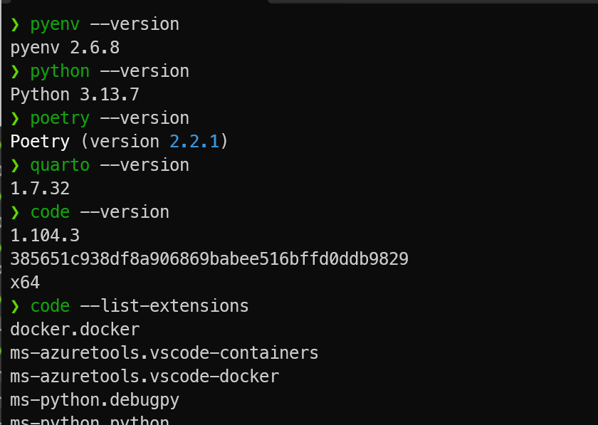

{kind=link}
{kind=link}
{kind=link}
{kind=link}
{kind=link}
{kind=link}
{kind=link}
| region_id | region_name | |
|---|---|---|
| 0 | 1 | Europe |
| 1 | 2 | Americas |
| 2 | 3 | Asia |
| 3 | 4 | Middle East and Africa |
Intro to SQL
Lecture 15
Monday - Oct 13, 2025
Housekeeping
Discussion items
Homework 5 - Getting started with SQL - due 10/12, SUN
Practice Quiz 4 - SQL Basics - due 10/12, SUN
Quiz 4 - SQL Basics - due 10/19, SUN
Homework 6 - Creating a database - due 10/19, SUN
Lecture topics
| Module | Week | Date | Day | Notes and Lectures | Activities and due dates |
|---|---|---|---|---|---|
| SQL | 9 | 10/13 | Mon | L15:Intro to SQL | |
| SQL | 9 | 10/15 | Wed | L16:SQL Selects | |
| SQL | 9 | 10/17 | Fri | No classes (Reading day) / Midterm grades due | |
| SQL | 9 | 10/19 | Sun | Q4:SQL Basics; HW6:Constructing a database | |
| SQL | 10 | 10/20 | Mon | L17:SQL Toolset | |
| SQL | 10 | 10/22 | Wed | L18:SQL and Docker | |
| SQL | 10 | 10/26 | Sun | HW7:Joining tables and reporting; Dis4:SQL Basics | |
| SQL | 11 | 10/27 | Mon | L19:C-R-U-D |
Homework 5 - Setup Checklist
Homework 5 - Checklist - Layer 1
Homework 5 is more than just installing the software. It’s all about making sure that it works!
Here is a checklist - can you do these things?
Show the versions the tools from a command line?
Run
poetry shelland verify quarto is working (quarto check)Render report.qmd from the command line.
Preview report.qmd from inside VScode.
Run a python block in VSCode?
Connect to the database in VSCode?
You should be able to ALL of these activities!

This assures us that you’ve got everything properly installed and on the PATH.
Homework 5 - Checklist - Layer 2
Homework 5 is more than just installing the software. It’s all about making sure that it works!
Here is a checklist - can you do these things?
Show the versions the tools from a command line?
Run
poetry shelland verify quarto is working (quarto check)Render report.qmd from the command line.
Preview report.qmd from inside VScode.
Run a python block in VSCode?
Connect to the database in VSCode?
You should be able to ALL of these activities!
This assures us that quarto is using the correct python. Be sure that you ran poetry install (once) and poetry shell to start a venv session. IF you get errors (like missing module) THEN make sure your tool stack is installed properly.
Homework 5 - Checklist - Layer 3
Homework 5 is more than just installing the software. It’s all about making sure that it works!
Here is a checklist - can you do these things?
Show the versions the tools from a command line?
Run
poetry shelland verify quarto is working (quarto check)Render report.qmd from the command line.
Preview report.qmd from inside VScode.
Run a python block in VSCode?
Connect to the database in VSCode?
You should be able to ALL of these activities!
Homework 5 - Checklist - Layer 4
Homework 5 is more than just installing the software. It’s all about making sure that it works!
Here is a checklist - can you do these things?
Show the versions the tools from a command line?
Run
poetry shelland verify quarto is working (quarto check)Render report.qmd from the command line.
Preview report.qmd from inside VScode.
Run a python block in VSCode?
Connect to the database in VSCode?
You should be able to ALL of these activities!
This assures us that VSCode is using the correct python from our virtualenv. If not then select python interpreter using ctrl-shift-P and entering Python: Select interpreter
Homework 5 - Checklist - Layer 4
Homework 5 is more than just installing the software. It’s all about making sure that it works!
Here is a checklist - can you do these things?
Show the versions the tools from a command line?
Run
poetry shelland verify quarto is working (quarto check)Render report.qmd from the command line.
Preview report.qmd from inside VScode.
Run a python block in VSCode?
Connect to the database in VSCode?
You should be able to ALL of these activities!
Homework 5 - Checklist - VENV and VSCODE
IF VSCODE throws errors saying it can’t find a module THEN you need to tell VSCODE where to find your virtual environment.
The Command Palette is a central function of VS-Code. From this internal command line you can set various features and functions DIRECTLY. The command palette greatly simplies the VScode UI!.
You access the command palette from the Settings icon in the bottom left, or press Ctrl+Shift+P from anywhere in VSCode.
The Command palette auto-completes. Enter python: select interpreter to have this command show in the list of possible commands.
Select your virtual environment python from the list, or select Enter interpreter path.
All poetry virtual environments are stored in ~/.cache/pypoetry/virtualenvs/ Pick your virtualenv folder from the list then navigate into ./bin/python. This tells VSCODE which python to run.
Homework 5 - Checklist - VENV and VSCODE
IF VSCODE throws errors saying it can’t find a module THEN you need to tell VSCODE where to find your virtual environment.
The Command Palette is a central function of VS-Code. From this internal command line you can set various features and functions DIRECTLY. The command palette greatly simplies the VScode UI!.
You access the command palette from the Settings icon in the bottom left, or press Ctrl+Shift+P from anywhere in VSCode.
The Command palette auto-completes. Enter python: select interpreter to have this command show in the list of possible commands.
Select your virtual environment python from the list, or select Enter interpreter path.
All poetry virtual environments are stored in ~/.cache/pypoetry/virtualenvs/ Pick your virtualenv folder from the list then navigate into ./bin/python. This tells VSCODE which python to run.
Homework 5 - Checklist - VENV and VSCODE
Selecting the correct virtual environment.
IF VSCODE throws errors saying it can’t find a module THEN you need to tell VSCODE where to find your virtual environment.
The Command Palette is a central function of VS-Code. From this internal command line you can set various features and functions DIRECTLY. The command palette greatly simplies the VScode UI!.
You access the command palette from the Settings icon in the bottom left, or press Ctrl+Shift+P from anywhere in VSCode.
The Command palette auto-completes. Enter python: select interpreter to have this command show in the list of possible commands.
Select your virtual environment python from the list, or select Enter interpreter path.
All poetry virtual environments are stored in ~/.cache/pypoetry/virtualenvs/ Pick your virtualenv folder from the list then navigate into ./bin/python. This tells VSCODE which python to run.
Homework 5 - Checklist - Layer 4
Homework 5 is more than just installing the software. It’s all about making sure that it works!
Here is a checklist - can you do these things?
Show the versions the tools from a command line?
Run
poetry shelland verify quarto is working (quarto check)Render report.qmd from the command line.
Preview report.qmd from inside VScode.
Run a python block in VSCode?
Connect to the database in VSCode?
You should be able to ALL of these activities!
This is what it looks like when the correct virtual environment is selected for quarto preview.
Homework 5 - Checklist - Layer 5
Homework 5 is more than just installing the software. It’s all about making sure that it works!
Here is a checklist - can you do these things?
Show the versions the tools from a command line?
Run
poetry shelland verify quarto is working (quarto check)Render report.qmd from the command line.
Preview report.qmd from inside VScode.
Run a python block in VSCode?
Connect to the database in VSCode?
You should be able to ALL of these activities!
This is what it looks like when the correct virtual environment is selected … AND the correct DB has been selected. IF you get database connection errors THEN you need to edit the .env file!
Homework 5 - Checklist - the .env file
Connecting to a database
- A .env file contains key-value pairs
- The config_map maps needed keys and values.
- ANY database connection requires at least 4 values:
- username and password
- host computer name
- host database name
- other values are often used to manage connection
Helper Function
I provide a helper function create_db_wrapper to encapsulate the details.
Look in helpers.py to see the connection code. The majority of the code contains exception handling to work smoothly with Quarto.
Homework 5 - Checklist - the .env file
Connecting to a database
- A .env file contains key-value pairs
- The config_map maps needed keys and values.
- ANY database connection requires at least 4 values:
- username and password
- host computer name
- host database name
- other values are often used to manage connection
Helper Function
I provide a helper function create_db_wrapper to encapsulate the details.
Look in helpers.py to see the connection code. The majority of the code contains exception handling to work smoothly with Quarto.
Homework 5 - Checklist - Layer 6
Homework 5 is more than just installing the software. It’s all about making sure that it works!
Here is a checklist - can you do these things?
Show the versions the tools from a command line?
Run
poetry shelland verify quarto is working (quarto check)Render report.qmd from the command line.
Preview report.qmd from inside VScode.
Run a python block in VSCode?
Connect to the database in VSCode?
You should be able to ALL of these activities!
Homework 5 - Checklist - Summary
Homework 5 is more than just installing the software. It’s all about making sure that it works!
Here is a checklist - can you do these things?
Show the versions the tools from a command line?
Run
poetry shelland verify quarto is working (quarto check)Render report.qmd from the command line.
Preview report.qmd from inside VScode.
Run a python block in VSCode?
Connect to the database in VSCode?
You should be able to ALL of these activities!
These layers are generally independent of each other. If one works, the others may or may not work.
You should be able to perform ALL of these activities! If not, you’re only going to make more work for yourself later on in the class.
There are other, odder errors you may encounter, especially if you had older versions of the tools installed. In some cases, you might need to UNINSTALL and REINSTALL the tools.
Don’t forget to review the tool stack installation guide. There may be something of value in their somewhere!
Homework 5 - Checklist - Summary
This is a general homework pattern that applies to all homeworks in CMSC408:
gh repo clone cmsc408-fa2025-hw5-jdleonard hw5 <- clone project to shorter folder
cd hw5 <- change into project folder created above
poetry install <- install virtualenv and all your modules
poetry shell <- shell into the virtualenv
cd reports <- change into reports folder
code ~/.env <- review the database connection key-value pairs.
code report.qmd <- review then adjust .ENV key-value pairs.
quarto render report.qmd <- render report for first time
open report.html <- review report.html for errors and next changesIterate editing report.qmd, saving, and rendering until done!
Getting to SELECT
Select statement
A SELECT query is the one of the most fundamental statements in SQL.
A SELECT statement describe a request to perform operations within the database and return a result set.
This result set is a relation.
This result can be used in subsequent operations or stored back into the DB as a new table.
A SQL query is relational algebra:
\(\Pi_{A_1, A_2, ... A_n}(\sigma_{P}(R_1 \times R_2 \times ... \times R_n) )\)
SELECT A1, A2, A3
FROM R1,R2
WHERE P
ORDER BY A2,A3,A1;
- A* represents an attribute (column), a literal, a function, or an operation
- R* represents a relation (table), cartesian project, or join
- P is a predicate, conditions or filters
SELECT clause and examples
The select clause lists the attributes desired in the result of a query, corresponds to the projection operation of the relational algebra
SQL names are case insensitive
SQL allows duplicates in relations as well as in query results
To force the elimination of duplicates, use the keyword distinct
An asterisk in the select clause denotes “all attributes”
May rename columns using alias
Regions table
Two different helper functions provided in homework 5: run_sql_and_return_df and run_sql_and_return_html.
SELECT clause and examples
Using * to select all columns
Employees table - first 15 rows
| employee_id | first_name | last_name | phone_number | hire_date | job_id | salary | commission_pct | manager_id | department_id | |
|---|---|---|---|---|---|---|---|---|---|---|
| 100 | Steven | King | SKING | 515.123.4567 | 2003-06-17 | AD_PRES | 24000.0 | NULL | NULL | 90 |
| 101 | Neena | Kochhar | NKOCHHAR | 515.123.4568 | 2005-09-21 | AD_VP | 17000.0 | NULL | 100.0 | 90 |
| 102 | Lex | De Haan | LDEHAAN | 515.123.4569 | 2001-01-13 | AD_VP | 17000.0 | NULL | 100.0 | 90 |
| 103 | Alexander | Hunold | AHUNOLD | 590.423.4567 | 2006-01-03 | IT_PROG | 9000.0 | NULL | 102.0 | 60 |
| 104 | Bruce | Ernst | BERNST | 590.423.4568 | 2007-05-21 | IT_PROG | 6000.0 | NULL | 103.0 | 60 |
| 105 | David | Austin | DAUSTIN | 590.423.4569 | 2005-06-25 | IT_PROG | 4800.0 | NULL | 103.0 | 60 |
| 106 | Valli | Pataballa | VPATABAL | 590.423.4560 | 2006-02-05 | IT_PROG | 4800.0 | NULL | 103.0 | 60 |
| 107 | Diana | Lorentz | DLORENTZ | 590.423.5567 | 2007-02-07 | IT_PROG | 4200.0 | NULL | 103.0 | 60 |
| 108 | Nancy | Greenberg | NGREENBE | 515.124.4569 | 2002-08-17 | FI_MGR | 12008.0 | NULL | 101.0 | 100 |
| 109 | Daniel | Faviet | DFAVIET | 515.124.4169 | 2002-08-16 | FI_ACCOUNT | 9000.0 | NULL | 108.0 | 100 |
| 110 | John | Chen | JCHEN | 515.124.4269 | 2005-09-28 | FI_ACCOUNT | 8200.0 | NULL | 108.0 | 100 |
| 111 | Ismael | Sciarra | ISCIARRA | 515.124.4369 | 2005-09-30 | FI_ACCOUNT | 7700.0 | NULL | 108.0 | 100 |
| 112 | Jose Manuel | Urman | JMURMAN | 515.124.4469 | 2006-03-07 | FI_ACCOUNT | 7800.0 | NULL | 108.0 | 100 |
| 113 | Luis | Popp | LPOPP | 515.124.4567 | 2007-12-07 | FI_ACCOUNT | 6900.0 | NULL | 108.0 | 100 |
| 114 | Den | Raphaely | DRAPHEAL | 515.127.4561 | 2002-12-07 | PU_MAN | 11000.0 | NULL | 100.0 | 30 |
| Total Rows: 15, Total Columns: 11 | ||||||||||
SELECT clause and examples
SELECT clause and examples
SELECT clause and examples
attribute can be literal or function
| Literal | Current Time | |
|---|---|---|
| 0 | 27 | 2025-10-13 19:16:53 |
Note that we’re using a built-in table named dual that returns what you put in as a table that can be used in subsequent operations.
Doing computations
The attribute can be a function or arithmetic operation
| full_name | Annual Salary | |
|---|---|---|
| 0 | King,Steven | 288000.0 |
| 1 | Kochhar,Neena | 204000.0 |
| 2 | De Haan,Lex | 204000.0 |
| 3 | Hunold,Alexander | 108000.0 |
| 4 | Ernst,Bruce | 72000.0 |
WHERE clause and examples
The WHERE clause specifies conditions that the results must satisfy, corresponding to the \(\sigma\) predicate in relational algebra.
An individual WHERE element returns TRUE or FALSE for every row. This is applied during the query and will return only rows that evaluate TRUE in the where clause.
Attributes in where clause can be compared using relational operators: < <= = >= >
WHERE elements can be combined using AND, OR and NOT logical operators.
WHERE also uses special operators: BETWEEN, IN and IS NULL
| last_name | first_name | salary | |
|---|---|---|---|
| 0 | King | Steven | 24000.0 |
| 1 | Kochhar | Neena | 17000.0 |
| 2 | De Haan | Lex | 17000.0 |
| 3 | Greenberg | Nancy | 12008.0 |
| 4 | Raphaely | Den | 11000.0 |
WHERE clause and examples
Selecting a department
| last_name | department_id | |
|---|---|---|
| 0 | Higgins | 110 |
| 1 | Gietz | 110 |
Data types matter. You’ll get an error if you set department_id=‘110’
Using BETWEEN
The attribute can be a function or arithmetic operation
| full_name | salary | |
|---|---|---|
| 0 | Raphaely,Den | 11000.0 |
| 1 | Errazuriz,Alberto | 12000.0 |
| 2 | Cambrault,Gerald | 11000.0 |
| 3 | Zlotkey,Eleni | 10500.0 |
| 4 | Tucker,Peter | 10000.0 |
WHERE clause and examples
Using IN
| last_name | department_id | |
|---|---|---|
| 0 | Greenberg | 100 |
| 1 | Faviet | 100 |
| 2 | Chen | 100 |
| 3 | Sciarra | 100 |
| 4 | Urman | 100 |
| 5 | Popp | 100 |
WHERE clause and examples
What are all the department IDs?
| department_id | |
|---|---|
| 0 | NaN |
| 1 | 10.0 |
| 2 | 20.0 |
| 3 | 30.0 |
| 4 | 40.0 |
| 5 | 50.0 |
| 6 | 60.0 |
| 7 | 70.0 |
| 8 | 80.0 |
| 9 | 90.0 |
| 10 | 100.0 |
| 11 | 110.0 |
Computations
Calculating commissions
What are the NaN “not a number” entries?
How do we remove the NaN (not a number) from list?
Calculating commissions
| Name | Monthly | With/Commission | |
|---|---|---|---|
| 0 | Abel,Ellen | 11000.0 | 135300.0 |
| 1 | Ande,Sundar | 6400.0 | 77440.0 |
| 2 | Atkinson,Mozhe | 2800.0 | NaN |
| 3 | Austin,David | 4800.0 | NaN |
| 4 | Baer,Hermann | 10000.0 | NaN |
| ... | ... | ... | ... |
| 102 | Vollman,Shanta | 6500.0 | NaN |
| 103 | Walsh,Alana | 3100.0 | NaN |
| 104 | Weiss,Matthew | 8000.0 | NaN |
| 105 | Whalen,Jennifer | 4400.0 | NaN |
| 106 | Zlotkey,Eleni | 10500.0 | 128100.0 |
107 rows × 3 columns
IFNULL operator
The IFNULL operator
IFNULL( expr1, expr2 ) replaces NULL with a value.
IF expr1 is NOT NULL then returns expr1
IF expr1 IS NULL, then returns expr2.
IFNULL operator
IFNULL( expr1, 0.0)
| Name | Monthly | With/Commission | |
|---|---|---|---|
| 0 | Abel,Ellen | 11000.0 | 135300.0 |
| 1 | Ande,Sundar | 6400.0 | 77440.0 |
| 2 | Atkinson,Mozhe | 2800.0 | 0.0 |
| 3 | Austin,David | 4800.0 | 0.0 |
| 4 | Baer,Hermann | 10000.0 | 0.0 |
| ... | ... | ... | ... |
| 102 | Vollman,Shanta | 6500.0 | 0.0 |
| 103 | Walsh,Alana | 3100.0 | 0.0 |
| 104 | Weiss,Matthew | 8000.0 | 0.0 |
| 105 | Whalen,Jennifer | 4400.0 | 0.0 |
| 106 | Zlotkey,Eleni | 10500.0 | 128100.0 |
107 rows × 3 columns
IFNULL( expr1, ‘missing’)
| Name | Monthly | With/Commission | |
|---|---|---|---|
| 0 | Abel,Ellen | 11000.0 | 135300.0000 |
| 1 | Ande,Sundar | 6400.0 | 77440.0000 |
| 2 | Atkinson,Mozhe | 2800.0 | missing |
| 3 | Austin,David | 4800.0 | missing |
| 4 | Baer,Hermann | 10000.0 | missing |
| ... | ... | ... | ... |
| 102 | Vollman,Shanta | 6500.0 | missing |
| 103 | Walsh,Alana | 3100.0 | missing |
| 104 | Weiss,Matthew | 8000.0 | missing |
| 105 | Whalen,Jennifer | 4400.0 | missing |
| 106 | Zlotkey,Eleni | 10500.0 | 128100.0000 |
107 rows × 3 columns
String operations
The operator LIKE uses patterns (case insensitive) (use LIKE BINARY for case sensitive) for string-matching operations using two special characters:
* percentage ( % ) matches any substring (none or many characters)
* underscore ( _ ) matches any single characterExamples:
‘Intro%’ matches any string beginning with “Intro”
‘%Comp%’ matches any string containing “Comp” as a substring
’_ _ _’ matches any string of exactly three characters
‘_ _ _ %’ matches any string of at least three characters
‘%_ a _’ same as before but the second to the last letter is ‘a’
String operations
DOUBLE %% when using Python
DOUBLE %% when using Python
| phone_number | |
|---|---|
| 0 | 515.123.4567 |
| 1 | 515.123.4568 |
| 2 | 515.123.4569 |
| 3 | 650.123.1234 |
| 4 | 650.123.2234 |
| 5 | 650.123.3234 |
| 6 | 650.123.4234 |
| 7 | 650.123.5234 |
| 8 | 650.121.1234 |
| 9 | 515.123.4444 |
| 10 | 515.123.5555 |
| 11 | 603.123.6666 |
| 12 | 515.123.7777 |
| 13 | 515.123.8888 |
| 14 | 515.123.8080 |
| 15 | 515.123.8181 |
ORDER BY clause
ORDER BY is used to specify the sort order in the result set.
The result set is sorted by the first attribute listed in the ORDER BY.
If there is a tie, ORDER BY moves to the second attribute, and so on.
Attribute expression may be modified with ASC (the default) or DESC (for descending)
Attributes in ORDER BY can be computed!
Example
| Full Name | Monthly | |
|---|---|---|
| 0 | King,Steven | 24000.0 |
| 1 | De Haan,Lex | 17000.0 |
| 2 | Kochhar,Neena | 17000.0 |
| 3 | Russell,John | 14000.0 |
| 4 | Partners,Karen | 13500.0 |
| ... | ... | ... |
| 102 | Gee,Ki | 2400.0 |
| 103 | Landry,James | 2400.0 |
| 104 | Markle,Steven | 2200.0 |
| 105 | Philtanker,Hazel | 2200.0 |
| 106 | Olson,TJ | 2100.0 |
107 rows × 2 columns
SELECT summary
Major statement clauses
SELECT- variable to projectFROM- tables to combineWHERE- filters to applyORDER BY- order of results
Inside each clause
CONCAT- combining columnsAS- Renaming columns- Literals
- Computations in SELECT
See the MySQL SELECT documentation.
Filters and functions
WHERE- AND, OR, NOT
<<===>>
BETWEEN- for whereIN- checking set membershipNULLvaluesIFNULLoperator- String matches
%%
See the MySQL Functions documentation
Housekeeping
Discussion items
Homework 5 - Getting started with SQL - due 10/12, SUN
Practice Quiz 4 - SQL Basics - due 10/12, SUN
Quiz 4 - SQL Basics - due 10/19, SUN
Homework 6 - Creating a database - due 10/19, SUN
Lecture topics
| Module | Week | Date | Day | Notes and Lectures | Activities and due dates |
|---|---|---|---|---|---|
| SQL | 9 | 10/13 | Mon | L15:Intro to SQL | |
| SQL | 9 | 10/15 | Wed | L16:SQL Selects | |
| SQL | 9 | 10/17 | Fri | No classes (Reading day) / Midterm grades due | |
| SQL | 9 | 10/19 | Sun | Q4:SQL Basics; HW6:Constructing a database | |
| SQL | 10 | 10/20 | Mon | L17:SQL Toolset | |
| SQL | 10 | 10/22 | Wed | L18:SQL and Docker | |
| SQL | 10 | 10/26 | Sun | HW7:Joining tables and reporting; Dis4:SQL Basics | |
| SQL | 11 | 10/27 | Mon | L19:C-R-U-D |
CMSC 408 - Databases